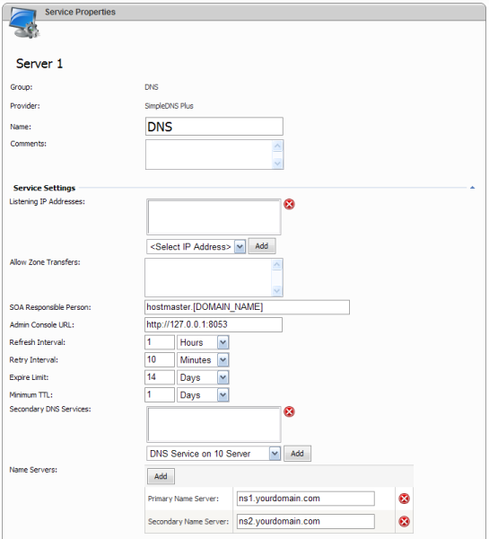

SimpleDNS Provider Settings

DNS service is the most important part of the entire system. Its correct configuration will avoid many problems in the future.
- Listening IP Addresses - specify the list of IP addresses listening by DNS service. This list of IP addresses will be used when creating secondary DNS zones as a list of master DNS servers. If you are not planning to use secondary DNS service, this list can be left empty. If you are configuring a secondary DNS service the list of listening IP addresses will be used in allowed zone transfers of primary zone.
- Allow Zone Transfers - in this field you may explicitly define the list of secondary servers IP address which are allowed for zone transfers from this primary service. If you are configuring secondary service this list may be left blank.
- Admin Console URL - the URL to SimpleDNS HTTP management interface. By default it is http://127.0.0.1:8053.
- SOA Responsible Person - you can specify the e-mail of SOA responsible person for DNS zones. [DOMAIN_NAME] variable can be used and will be substituted with DNS zone name. Recommended value for this field is hostmaster.[DOMAIN_NAME].
- Refresh Interval - Specify refresh interval for DNS zones. It determines how often secondary DNS servers should check if changes are made to the zone. The recommended value is 1 hour.
- Retry interval - Specify retry interval for DNS zones. This interval determines how often secondary DNS server should retry checking if changes are made - if the first refresh fails. The recommended value is 10 minutes.
- Expire Limit - Specify expire limit for DNS zones. This time determines how long the zone will be valid after a refresh. Secondary servers will discard the zone if no refresh could be made within this interval. The recommended value is 2 weeks.
- Minimum TTL - Specify minimum TTL (time to live) for DNS zones. This is the time specifying the amount of time other DNS servers and applications are allowed to cache zone records. The recommended value is 1 dasy.
- Secondary DNS Services - the list of secondary DNS services. When a new primary DNS zone is creating (and the current service is considering as a primary one) corresponding secondary zone will be created on each of those services.
- Name Servers - Specify the list of custom name servers. We recommend you having at least two name servers specified listening two different IP addresses. For example: ns1.myproviderdomain.com and ns2.myproviderdomain.com. Please note WSP does not create name server automatically and you should configure them manually.